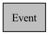

Event
-
class Event
Inheritence diagram for Event:
![digraph {
graph [bgcolor="#00000000"]
node [shape=rectangle style=filled fillcolor="#FFFFFF" font=Helvetica padding=2]
edge [color="#1414CE"]
"2" [label="ArrivalEvent" tooltip="ArrivalEvent"]
"3" [label="DepartureEvent" tooltip="DepartureEvent"]
"1" [label="Event" tooltip="Event" fillcolor="#BFBFBF"]
"4" [label="ServiceBeginEvent" tooltip="ServiceBeginEvent"]
"5" [label="ServiceDoneEvent" tooltip="ServiceDoneEvent"]
"2" -> "1" [dir=forward tooltip="public-inheritance"]
"3" -> "1" [dir=forward tooltip="public-inheritance"]
"4" -> "1" [dir=forward tooltip="public-inheritance"]
"5" -> "1" [dir=forward tooltip="public-inheritance"]
}](../_images/graphviz-a1a1b560e88a2013b80e5875edfb080ac1fb1dc2.png)
Collaboration diagram for Event:
The Event class is an abstract class that encapsulates a discrete event to be simulated. An event encapsulates the time the event occurs. A subclass of event must override the simulate() method to implement the logic of the simulation when this event is simulated. The simulate method returns an array of events, which the simulator will then add to the event queue. Note that an event also implements the Comparable interface so that a PriorityQueue can arrange the events in the order of event time.
Subclassed by ArrivalEvent, DepartureEvent, ServiceBeginEvent, ServiceDoneEvent
Public Functions
-
explicit Event(const double time)
Creates an event that occurs at the given time.
- Parameters:
time – The time the event occurs.
-
double getTime() const
Getter to return the time of this event.
- Returns:
The time this event occurs.
-
virtual std::vector<std::shared_ptr<Event>> simulate() = 0
Simulate this event.
- Returns:
An vector of new events to be scheduled by the simulator.
-
virtual std::ostream &print(std::ostream &out) const
-
virtual ~Event() = default
Private Members
-
const double time = {}
The time this event occurs in the simulation.
-
explicit Event(const double time)